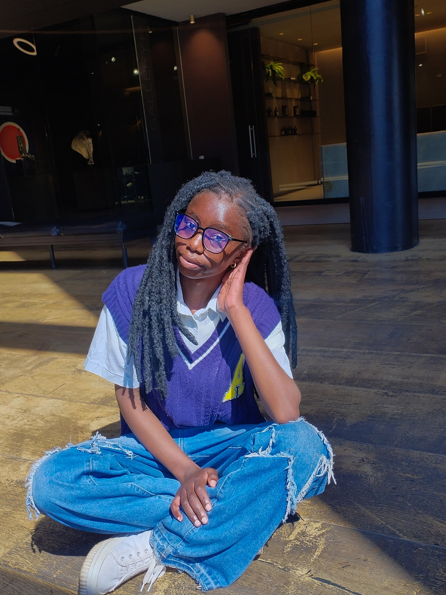
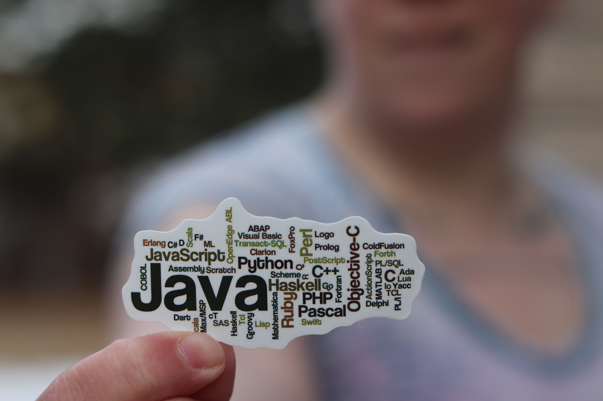
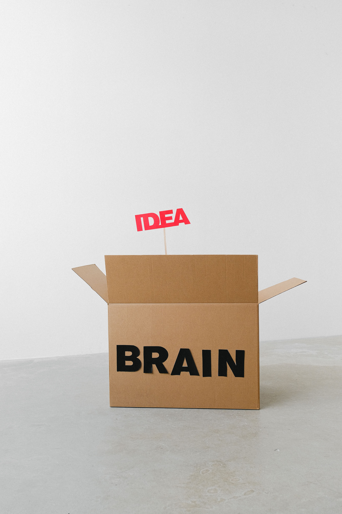

Banking System:
I Built a Banking System that allows customers to manage their accounts,depositing money and withdrawing funds using java and sql for the database
View on GitHubI’m an upcoming software engineer turning curiosity into interfaces, ideas into products, and technology into experiences people remember

I’m not interested in building ordinary things just because they work.
Im Josephine Ilunga, a developer at the start of a long build.
more curious than certain, and more intersting in the process than finished product.
Most days the means of breaking small things on purpose to understand how they work.
Outside of code , I love to dress like its a creative practice, say yes to activities i havent tried yet,
and treat "upcoming " as a description of momentum , not a lack of experience .
My perspective sits between technology and culture from the logic behind a clean interface to the visual language of fashion and the inspiration that comes from exploring somewhere new.
I care about the details people feel but cannot name:spacing,rhythm and how a button responds when you press it

I mostly work with java,c++ and javascript, but keen to explore and learn other programming languages,I love building projects that are meaningful

I am fascinated by how culture influences technology and vice versa, and I strive to create products that resonate with diverse audience
I Built a Banking System that allows customers to manage their accounts,depositing money and withdrawing funds using java and sql for the database
View on GitHubI built a java swing application that validates data using java
View on GitHubI built a Rock-Paper-Scissors Game using:
View on GitHubI built a TO-DO list application using html, css, and javascript
View on GitHub